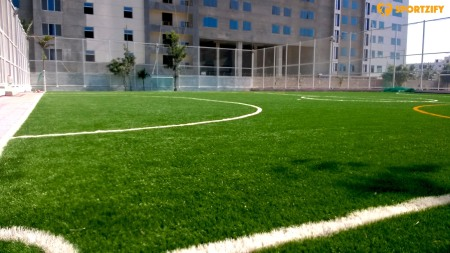

Magnum Sports Arena

- MA beautiful Lush green spread-out, Magnum Arena has facilities for both 5 a-side and 8 a-side football.
- Best part about this venue is Power-back up is provided in case of any shutdowns in the city.
- Try out this space, for hosting any events or football tournaments.
- With the Football turfs in Bengaluru running a whole lot famous, Kick On Sweat On is also part of the family of football venues laid out across the city.
 ASTROBOOK
ASTROBOOK